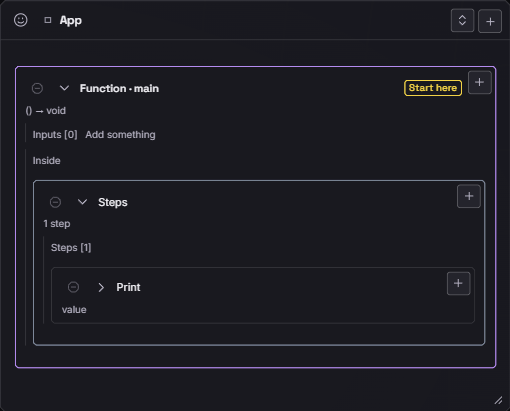
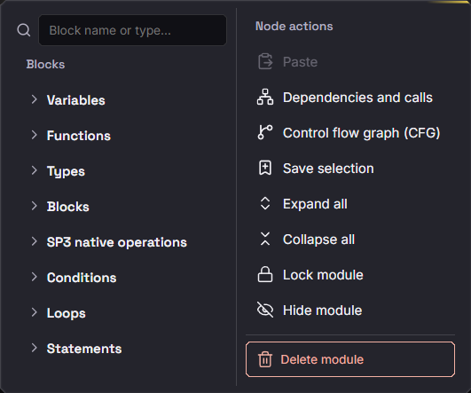
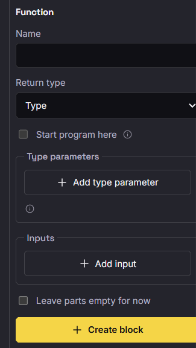
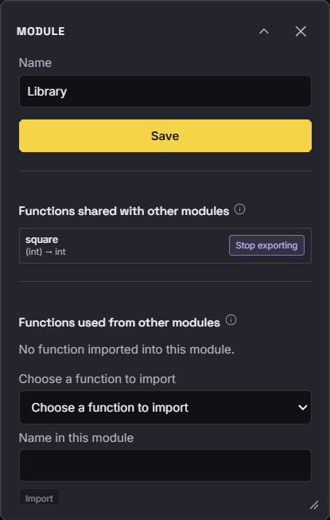
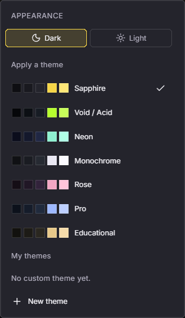

Documentation visuelle
Prendre en main l'interface
Cette page montre l'application actuelle avec des vues rapprochées. L'objectif est simple : savoir lire une carte, ajouter une construction, relier deux modules, exécuter et exporter. Les captures viennent de l'application réelle ; elles ne sont pas des maquettes.
1 — Ouvrir un projet
Le plus rapide est d'ouvrir Examples → Simple → Imports. Le canvas affiche deux modules et une flèche. La barre du haut regroupe les commandes de fichier, d'affichage et d'exécution. Le statut en bas indique le zoom et la position de la vue.

Une carte peut être déplacée, redimensionnée ou repliée. Le bouton Center the view replace les cartes dans le cadre. La molette zoome ; le clic-glisser déplace le canvas.
2 — Lire une carte Module
Une carte Module est une portée. Son titre est son nom. Les fonctions apparaissent en lignes. Le chevron
ouvre les entrées, les étapes et le retour. Le badge pure signale une fonction sans effet de
bord ni dépendance extérieure.

square reçoit un entier et retourne une valeur.Cliquez une ligne pour la sélectionner et ouvrir ses propriétés. Le bouton + ajoute une construction à l'endroit choisi ; il n'ajoute jamais un bloc au hasard.
3 — Lire une carte App
Une carte App est un module comme un autre, mais elle porte le programme de départ. Start here
désigne le point d'entrée. Ici, main n'a pas de paramètre et contient une instruction
Print.

Un projet valide possède zéro ou un seul point d'entrée. Le moteur signale les doublons sans supprimer les données.
4 — Ajouter une construction
Le bouton + d'une carte ouvre le menu des constructions. Les familles sont à gauche : variables, fonctions, types, blocs, opérations natives, conditions, boucles et instructions. La colonne de droite propose les actions propres au module.


Le formulaire ne crée rien tant que les champs requis ne sont pas valides. Si une valeur est refusée, le message apparaît dans le panneau et le document reste inchangé.
5 — Relier deux modules
Library exporte square. App l'importe et l'appelle. La flèche part du module
exportateur et entre dans le module utilisateur. Elle n'apparaît que si une exportation est réellement
référencée : un import inutilisé ne crée pas de dépendance.

Pour ajouter une dépendance, exportez une fonction depuis le module source, puis importez-la depuis le module utilisateur. Le moteur crée l'import et vérifie la signature.
6 — Vérifier les propriétés
Cliquez le titre d'un module pour ouvrir ses propriétés. Vous pouvez le renommer, voir les fonctions partagées avec les autres modules et choisir une fonction à importer. Le panneau ne modifie que le module concerné.

7 — Exécuter
Run live exécute le programme et laisse le panneau Simulation suivre l'état. Le nombre d'étapes avance, la vitesse se règle avec le curseur, et Pause ou Stop reste accessible dans la barre. La sortie du programme apparaît dans le panneau Output.

Une exécution bornée reste disponible pour précalculer une trace finie. Le mode live est le mode normal pour suivre un programme en continu.
8 — Exporter
Transpile propose JavaScript, Python et un C expérimental. Le panneau montre le code généré, avec
les boutons Copy et Export. Le code est produit depuis le même modèle logique, pas depuis une
capture du canvas. Le C reste volontairement restreint : tableaux, classes, lambdas,
ForEach, opérations natives et conversions y sont refusés. Le détail par cible est sur
la page Transpilation.

9 — Changer d'apparence
Theme règle l'apparence sombre ou claire et la palette. Le choix s'applique immédiatement. Le sélecteur de langue traduit l'interface, jamais les noms que vous saisissez ni les sorties du programme.

À retenir. Une carte est une portée, une ligne est une construction, une flèche est une dépendance réellement utilisée. Le moteur valide avant d'écrire : une erreur ne doit pas laisser le document dans un état intermédiaire.